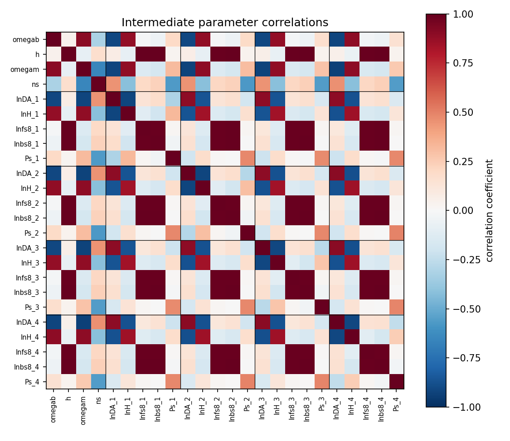
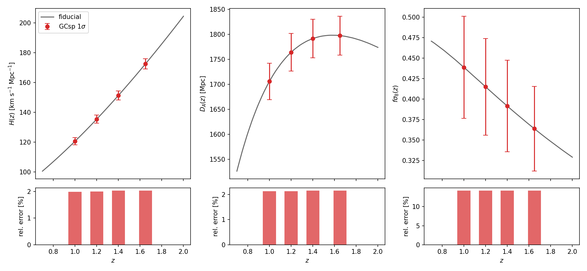
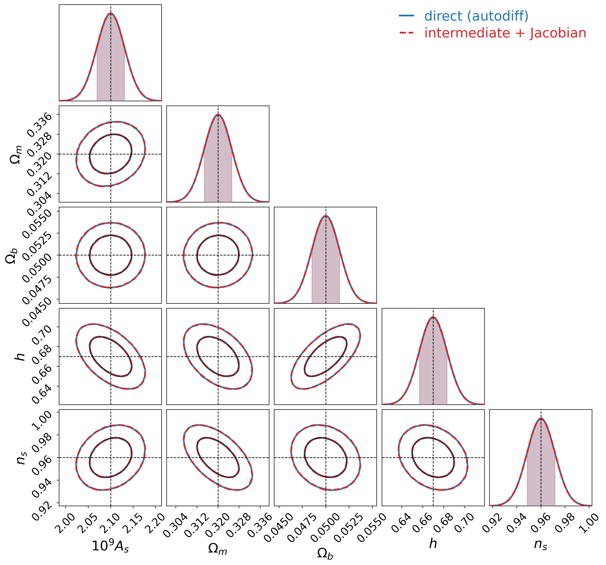
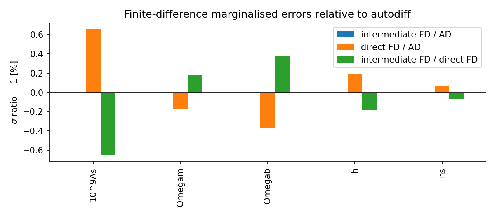

GCsp forecasts through intermediate parameters#
The usual CosmicJellyfish spectroscopic forecast differentiates the observed galaxy power spectrum directly with respect to the cosmological parameters. The Euclid forecast-validation paper (Euclid Collaboration, Euclid preparation VII, Sect. 4.2.1) takes a detour instead. It first constrains a set of intermediate quantities: a few parameters that set the shape of the power spectrum, plus the expansion rate, the angular distance and the growth amplitude measured separately in every redshift bin. Only at the end are those constraints turned into constraints on cosmology, with a Jacobian.
The detour is worth having. The per-bin measurements of \(H(z)\), \(D_A(z)\) and \(f\sigma_8(z)\) are close to what a survey actually measures, they are largely independent of the cosmological model, and once you have them you can project onto any model you like without recomputing a single power spectrum.
The module cosmicjellyfish.LSSsurvey.gcsp_intermediate implements this route on top of the
validated JAX spectroscopic observable. It is not meant as a line-by-line reproduction of the
paper’s pipeline; it uses the same physics as the direct forecast, so the two routes can be
compared exactly.
The intermediate parameters#
Kind |
Parameters |
Count |
|---|---|---|
Shape (global) |
\(\omega_b = \Omega_b h^2\), \(h\), \(\omega_m = \Omega_m h^2\), \(n_s\) |
4 |
Background (per bin) |
\(\ln D_A(z_i)\), \(\ln H(z_i)\) |
\(2N_z\) |
Growth (per bin) |
\(\ln f\sigma_8(z_i)\) |
\(N_z\) |
Nuisance (per bin) |
\(\ln b\sigma_8(z_i)\), \(P_s(z_i)\) |
\(2N_z\) |
The shape parameters follow the paper: they only change the shape of the de-wiggled spectrum normalised by \(\sigma_8\), while the amplitude is carried entirely by \(f\sigma_8\) and \(b\sigma_8\). The observed spectrum in bin \(i\) reads
where \(q_\parallel = H^{\rm fid}(z_i)/H(z_i)\) and \(q_\perp = D_A(z_i)/D_A^{\rm fid}(z_i)\) drive the Alcock-Paczynski remapping of \(k\) and \(\mu\). Because \((b\sigma_8 + f\sigma_8\mu^2)^2 P_{\rm dw}/\sigma_8^2\) is just \((b + f\mu^2)^2 P_{\rm dw}\) written differently, this observable is identical to the validated one at the fiducial point. We check that it agrees to \(2\times10^{-15}\).
Setting include_nonlinear=True adds the velocity dispersions \(\ln\sigma_v(z_i)\) and
\(\ln\sigma_p(z_i)\) as extra nuisance parameters per bin.
The Fisher matrix#
Within each bin the Fisher matrix is the standard GCsp integral,
with \(V_i\) the comoving volume of the bin and \(n_i\) its galaxy number density. Write \(\boldsymbol\theta_s\) for the four shape parameters and \(\boldsymbol\theta_i\) for the five local parameters of bin \(i\). A local parameter only changes the spectrum in its own bin, so bins are coupled only through the shape parameters, and the full matrix has the block-arrowhead structure of the paper (Eqs. 96-98):
Here \(\mathbf F_{ss}\) is \(4\times4\), each \(\mathbf F_{ii}\) is \(5\times5\) and each coupling block \(\mathbf F_{si}\) is \(4\times5\). The correlation matrix of the intermediate parameters shows the pattern: shape parameters correlate with everything, local parameters only within their own bin.


Bias and shot noise are then marginalised. For a Fisher matrix split into kept (\(k\)) and marginalised (\(m\)) parameters this is the Schur complement
What survives are the shape parameters and three functions per bin. The marginalised errors on those functions are the model-independent output of the survey:


Projecting onto cosmology#
Each kept intermediate parameter is a function of the final cosmological parameters, so the Fisher matrix transforms with the chain rule
The Jacobian is computed with JAX (or with finite differences, for cross-checks) and the
projection is done by the general helper
cosmicjellyfish.analysis.fisher_operations.reparametrise(). \(\mathbf J\) is sparse and easy
to read: the primordial amplitude enters only through \(f\sigma_8\), and \(\omega_b\) and \(\omega_m\)
pick up an \(h\) dependence through \(\omega = \Omega h^2\).
Note
reparametrise and fisher_derived solve
different problems. reparametrise is for when the old parameters are functions of the new
ones; it pulls back the Fisher matrix, \(\mathbf F' = \mathbf J^T\mathbf F\,\mathbf J\) with
\(\mathbf J = \partial(\text{old})/\partial(\text{new})\). fisher_derived adds quantities that are
functions of the existing parameters; it pushes the covariance forward,
\(\mathbf C' = \mathbf A^T\mathbf C\,\mathbf A\) with \(\mathbf A = \partial(\text{derived})/\partial(\text{old})\).
For an invertible change of variables the two agree, since \(\mathbf A = \mathbf J^{-1}\).
Usage#
import jax
jax.config.update("jax_enable_x64", True)
from cosmicjellyfish.LSSsurvey.gcsp_intermediate import GCspIntermediateForecast
forecast = GCspIntermediateForecast(
options={"spectro_Pk_k_samples": 24, "spectro_Pk_mu_samples": 12},
specifications={"kmin_GCsp": 0.01, "kmax_GCsp": 0.20, "spec_sigma_dz": 0.001},
cosmoModel="LCDM",
)
result = forecast.run(method="ad") # or method="fd" for paper-style finite differences
reduced, kept = result["fisher_reduced"], result["kept_names"]
binned = forecast.binned_constraints(reduced, kept) # sigma on H, D_A, f sigma8 per bin
final = forecast.projected_fisher_matrix(
reduced, kept, result["jacobian"], result["final_names"]
) # a fisher_matrix object for the usual tools
comparison = forecast.compare() # against the direct validated forecast
By default the final parameters are \(10^9A_s\), \(\Omega_m\), \(\Omega_b\), \(h\) and \(n_s\), plus
\(w_0\) and \(w_a\) for cosmoModel="w0waCDM". Passing freepars restricts the projection to those
names.
How well does it work?#
All numbers below use four Euclid bins between \(z = 0.9\) and \(1.8\), a 24 × 12 grid in \(k\) and \(\mu\), and \(0.01 \le k\,h^{-1}\,{\rm Mpc} \le 0.2\).
The observable reproduces the validated one to \(1.8\times10^{-15}\) in \(\ln P\). Paper-style finite differences agree with JAX autodiff to about \(10^{-10}\) for every intermediate parameter.
Projected with the autodiff Jacobian, the intermediate route reproduces the direct autodiff Fisher matrix to a relative precision of \(10^{-12}\). The marginalised errors are identical:
Parameter |
\(\sigma\) (intermediate) |
\(\sigma\) (direct) |
|---|---|---|
\(10^9A_s\) |
0.03051 |
0.03051 |
\(\Omega_m\) |
0.005190 |
0.005190 |
\(\Omega_b\) |
0.001476 |
0.001476 |
\(h\) |
0.01314 |
0.01314 |
\(n_s\) |
0.01141 |
0.01141 |


With finite differences everywhere, the intermediate route still matches autodiff to the displayed precision. The direct forecast with its default 1% step is off by up to 0.65% (\(10^9A_s\)); this is the direct step size, not the intermediate machinery, and it disappears as the step shrinks (0.06% at \(10^{-3}\), \(10^{-8}\) at \(10^{-4}\)).


Things to keep in mind#
Amplitude units. Always prefer
10^9Asfor forecast inputs and final parameters (for example,10^9As = 2.1). This keeps the amplitude on a scale comparable to the other cosmological parameters. PhysicalAsis supported, and covariance inversion normalises the parameter axes, but using10^9Asavoids unnecessarily large differences in Fisher-matrix scales.Step size. The no-wiggle spectrum is a Savitzky-Golay smoothing followed by linear interpolation in \(k\). Finite-difference steps of order \(10^{-3}\), at the low end of the paper’s recommended range, straddle interpolation nodes and bias the derivatives at the per-mille level. The default step here is \(5\times10^{-6}\).
Models. The JAX theory covers flat \(\Lambda\)CDM and \(w_0w_a\)CDM with massless neutrinos. There is no \(\gamma\) parameterisation yet, and the amplitude is \(A_s\) rather than \(\sigma_8\).
Tracers. Only the matter tracer and the
linearandlinear_logbias models are supported.
Notebook#
08-GCsp-intermediate-parameters.ipynb
walks through everything on this page and produces all the figures.